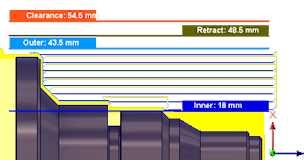

Usinage extérieur.
''Intérieur = Zone d'usinage la plus à l'intérieur.''
Affichée en bleu foncé, définit la position la plus à l'intérieur de la zone de coupe. Pour l'usinage du diamètre extérieur, la trajectoire d'outil procède à la coupe jusqu'à cette profondeur intérieure. Pour l'usinage du diamètre intérieur, il s'agit de la hauteur de départ de la zone d'usinage interne.
|
Usinage extérieur. |
 |
Usinage extérieur. |
 |
Usinage intérieur. |
 |
Usinage intérieur |
REMARQUE: le rayon intérieur doit être inférieur au rayon extérieur pour l'usinage du rayon extérieur et du rayon intérieur.